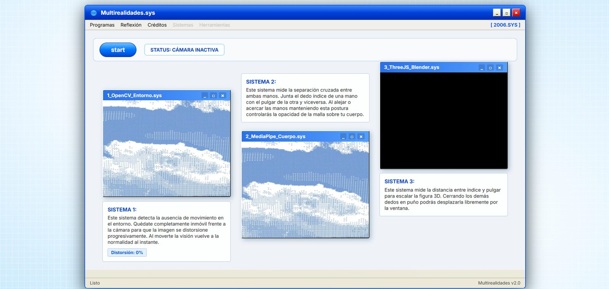

Multirealidades.sys
2026
- interacción digital
- T03

descripción
Multirealidades explora cómo el cuerpo altera la realidad digital a través de la cámara web. Opera con tres sistemas simultáneos: OpenCV distorsiona la imagen cuando el usuario permanece quieto, MediaPipe rastrea gestos de las manos para proyectar partículas sobre la silueta, y Three.js permite escalar y desplazar un modelo 3D en tiempo real mediante gestos de los dedos.
Autores: Alvarez, Pañitrur / T03 · Diseño de Proyectos de Interacción Digital